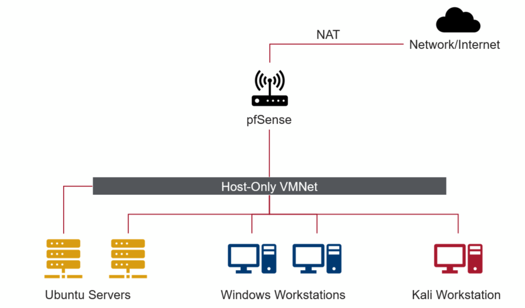

Creating a Cyber Range (JIA)
Table of Contents
1. Goal
The goal of this exercise is to create a cyber range.
1.1. Topology

2. Virtual machine installs
2.1. Ubuntu-Server-01
2.1.1. VM Specs
- 20GB - HDD in single file
- NIC:
- On setup: NAT
- After setup: Host-Only
2.2. pfsense
2.2.1. VM Specs
- 20GB - HDD in one file
- NIC:
- On Setup: NAT
- After setup:
- NIC 1: NAT
- MAC: 00:0C:29:0F:AA:22
- NIC 2: Host-Only
- MAC: 00:0C:29:0F:AA:2C
- NIC 1: NAT
2.2.2. Install
ZFS guided install single "striped" install
2.4. Kali-Blue
Copy the extracted virtual machine into Desktop/VMs where the rest of the VMs created so far are and open the kali.vmx file.
2.4.1. Username
kali:kali
2.5. Kali-Purple
2.5.1. VM specs
- 60GB - HDD in single file
- NIC:
- On setup: NAT
- After setup: Host-Only
2.5.2. Username
kali:kali
2.6. Win10-V
Imported from provided MSEdge-Win10-VMware.ovf file
2.6.1. Username
IEUser:Passw0rd!
3. Excursus on exporting
The lab has an exercise in exporting and importing VMs this has been skipped for brevities sake
4. Virtual Network
- Open the virtual network editor (Edit -> Virtual Network Editor…)
- grant Administrator privilege (Change Settings)
- Add Network
- Host-Only
- Rename to IA-Internal-Network
- Uncheck
- Connect a host virtual adapter to this network
- Use local DHCP service to distribute IP address to VMs
- Move all machines onto IA-Internal-Network
- Edit Virtual Machine Settings
- Network Adapter
- Custom: IA-Insternal-Network
4.1. pfSense
- Add another NIC and assign it to IA-Internal-Network
- This router should have two NICs
- NAT
- IA-Internal-Network
- Record the MAC addresses
4.1.1. Configuration
- Assign interfaces
- Should VLANs be set up now [y:n]? n
- WAN insterface should match the WAN MAC
- LAN interface should match the LAN MAC
- Set interfaces IP address
- WAN: DHCP
- LAN: 192.168.1.1 /24
- DHCP server? y
- 192.168.1.100 - 192.168.1.200
- DHCP server? y
- Reboot system
- Reboot normally
- Reset webConfigurator password
- For initial setup admin:pfsense
4.1.2. pfSense web password
admin:Sysadmin123
4.1.3. Webconfigurator
On kali-purple go to 192.168.1.1, login and do the following
- Services -> DNS Resolver
- Register DHCP releases in the DNS Resolver
- Register DHCP static mappings in the DNS Resolver
- Save and Apply
- Services -> DHCP Server
- Ensure the range is correct
- Static assign kali-purple 192.168.1.10
- Copy My MAC
- Client Identifier: Kali-Purple
- IP Address: 192.168.1.10
- Hostname: kali-purple
- Description: ia.local
- ARP Table Static Entry: check
- Save and Apply
4.2. Kali-purple
reset the wired ethernet connection and ensure the static ip address has been assigned.
sudo ip link set eth0 down sudo ip link set eth0 up sudo dhclient -r
5. Testing
You should now be able to bring all the machines up and ping test